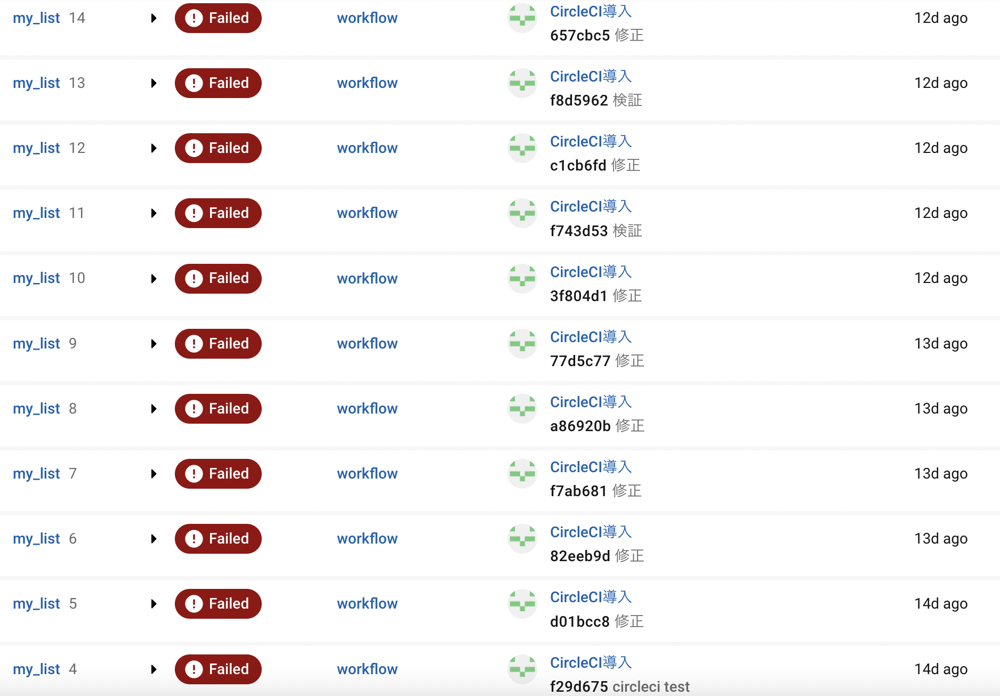

My_list(献立計画の補助サービス)
開発環境
Ruby / Ruby on Rails / Docker / AWS EC2 / CircleCI / Mysql / GitHub / Visual Studio Code
-
概要
制作時間 約250時間 URL http://13.231.2.50/ -
動作テスト
テスト用アカウント
mail 1@1 PASS 111111 ※ゲストログインボタンにてテスト用アカウントでのログインが可能です
OUTLINEアプリケーションの概要
オリジナルアプリケーションとして、献立計画を手助けするWebアプリケーションを開発しました。
主な機能は、レシピの登録機能、登録済みのレシピからランダムで献立登録、任意のレシピを献立登録、お買い物リストの表示機能です。
献立計画の登録、気分に合わせた献立のランダム登録機能で献立の決定をサポートします。
家族間でアカウント共有すれば献立の予定を共有することやリクエストするような使い方もできます。
また、レシピ登録時に食材を合わせて登録しておけば登録済みの献立に必要な食材の買い物リストを表示します。
-
開発に至った経緯
献立を決める事に苦労している姿を身近で見ていました。
少しでも負担の軽減ができればいいなと思い、ランダムで献立を決めてくれるサービスを開発しました。
-
開発で工夫したこと
1つ目はCircleCIでのCI/CDパイプライン構築や開発環境にDockerの導入などカリキュラムにはなかった技術を独学で取り入れる事で、他の卒業生と差別化を図ろうと試みた点です。
2つ目がなるべく制限を減らすように心がけました。
具体的には、
・食材の登録時に全角数字で送信されても半角数字に変換する処理
・食材の登録を1回のフォーム送信で複数のレコードに登録できる処理
・レシピのフォルダ登録をチェックボックスで1回の送信でまとめて登録できる機能
などなるべく操作回数が減るように心掛けました。3つ目は実際に利用してもらいフィードバックを受けながら開発を進めた点です。